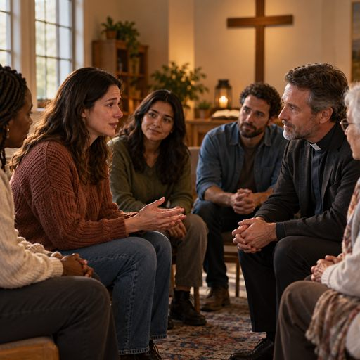

Chapter 13
Healing When the Church Has Become the Wound
Key Scriptures: Psalm 34:18; Psalm 147:3; Isaiah 42:3; Matthew 11:28–30; John 4:19–24; Romans 8:38–39; Ephesians 4:15.
Central Truth
Human failure within a church can wound deeply, but it does not define the character of Jesus Christ. Healing requires honesty, grief, discernment, appropriate accountability, and freedom to pursue God without denying what happened.
When the Place of Refuge Becomes a Place of Pain
There is a particular kind of grief that comes when the place you believed would help you heal becomes the place where you are wounded. It is one thing to be misunderstood by the world, rejected by people who do not share your faith, or disappointed by someone who never claimed to represent the character of Christ. It is something altogether different when the pain comes from people who prayed with you, worshiped beside you, taught you the Scriptures, called you family, or stood before a congregation speaking about the love of God. When the wound comes from within the walls of a church, the pain can reach beyond the relationship itself and begin to touch the very language, songs, Scriptures, and spiritual practices that once brought comfort to your soul.
For some people, the sound of a worship song brings tears because it reminds them of the presence of God. For others, the same song may bring tears because it reminds them of a season when they were desperately seeking God while feeling abandoned by the people who surrounded them. A sermon about forgiveness may offer freedom to one person while leaving another wondering whether the pain they experienced will ever be acknowledged. A familiar passage of Scripture may bring hope to someone who is hurting, while another person struggles to read it because those same words were once used to silence questions, dismiss concerns, or demand compliance.
These experiences deserve to be approached with compassion rather than judgment. We must not assume that everyone who struggles to enter a church building has abandoned God, nor should we conclude that every person who leaves a congregation is rebellious, bitter, or unwilling to forgive. Sometimes people leave because they have stopped caring, but sometimes they leave because they have spent years caring deeply and have finally recognized that remaining in a damaging environment is costing them more than they can continue to give. We cannot know the full story of another person’s heart simply by observing whether they occupy a seat on Sunday morning.
The Church is called to be a place where people encounter the truth, grace, fellowship, correction, and hope found in Jesus Christ. Yet the Church is made up of human beings who are still responsible for their choices, and spiritual language does not make harmful behavior harmless. When people misuse authority, conceal wrongdoing, ridicule the vulnerable, or protect reputation at the expense of those who have been hurt, the resulting damage should not be dismissed simply because it occurred in a religious setting.
Psalm 34:18 declares that the Lord is close to the brokenhearted and saves those who are crushed in spirit. Notice where the promise directs our attention: not toward the reputation of the institution, not toward the comfort of those who caused the wound, and not toward the pressure to appear healed before the healing has taken place, but toward the nearness of God to the brokenhearted. The wounded person does not have to pretend that everything is well before seeking the One who is near.
Sometimes the first step toward healing is not finding another church, resolving every disagreement, or explaining your story to everyone who has formed an opinion about you. Sometimes the first step is simply acknowledging that something painful happened and allowing yourself to bring that truth honestly before God.
God Is Not Limited by the Failures of His People
One of the deepest dangers of spiritual hurt is that a person’s experience with people can begin to shape their understanding of God. When a leader uses Scripture to shame someone, the wounded person may begin to associate Scripture with condemnation. When a congregation rejects someone during a season of vulnerability, that person may begin to believe that God has rejected them as well. When someone is told that asking questions demonstrates a lack of faith, they may become afraid to bring their honest questions into the presence of the Lord.
This is where healing must become more than an attempt to feel better about what happened. The wounded heart needs room to examine what it has come to believe about God, itself, other people, and the future. If a person has repeatedly been told that God’s love depends on pleasing a particular leader, they may need time to rediscover the difference between the character of God and the expectations imposed by human beings. If they have been taught that every disagreement is rebellion, they may need to learn that humility and honest questions can exist together. If they have been made to feel that leaving a particular congregation means leaving God, they may need to reconsider whether a human institution has been given a place in their heart that belongs to the Lord alone.
Jesus encountered religious environments in which people carried heavy burdens because of the demands and traditions imposed upon them. In Matthew 11:28–30, He invited those who were weary and burdened to come to Him and find rest for their souls. His invitation did not require exhausted people to first prove that their exhaustion was justified in the eyes of every religious authority around them. He called them to Himself.
That invitation still matters to people who have been hurt in religious settings. You may need to step back and examine what happened. You may need to speak with someone trustworthy, seek appropriate counseling, read Scripture slowly, or spend time in prayer without feeling pressured to produce a particular emotional response. You may need to admit that you are angry, confused, disappointed, or afraid. None of those experiences automatically places you beyond the reach of God’s grace.
At the same time, healing does not require us to assume that every pastor is dangerous, every congregation is dishonest, or every religious community will eventually cause harm. Such conclusions can become another form of bondage, keeping a person trapped in the expectation that every future relationship will repeat the worst experiences of the past. Discernment recognizes that people and communities must be evaluated by their conduct and fruit, while bitterness insists that the past has already determined the future.
The failures of some people who claim to serve God do not establish the character of God Himself. Human beings can misrepresent the One they profess to follow, and when they do, their behavior should be confronted truthfully. Yet we must not allow their failures to become the only lens through which we understand the Lord.
Your wound deserves to be acknowledged, but it does not have to become the final authority over your relationship with God.
You Are Allowed to Grieve What You Lost
Church hurt often carries losses that are difficult to explain to people who have never experienced them. You may have lost friendships that once felt permanent, opportunities to serve, a sense of belonging, confidence in leadership, or the future you imagined within a particular community. You may miss people who are still alive but with whom you can no longer safely or honestly maintain the same relationship. You may even miss the version of yourself who once entered the sanctuary without carrying questions, apprehension, or painful memories.
Grief does not always arrive as tears. Sometimes it appears as anger, exhaustion, silence, confusion, or the inability to find words for what happened. Sometimes a person feels relief after leaving a harmful environment and then feels guilty for being relieved. Sometimes they miss the good memories while knowing that the damaging parts of the relationship cannot simply be ignored. Human experiences are often complicated enough to contain more than one feeling at the same time.
You can be grateful for what was good without pretending that what was harmful never happened. You can appreciate a season of spiritual growth while acknowledging that certain people later caused you pain. You can miss a friendship while recognizing that the relationship, as it currently exists, is not healthy for you. You can grieve the loss of a ministry opportunity without concluding that your calling has ended.
Psalm 147:3 says that God heals the brokenhearted and binds up their wounds. The image is not of a wound that never existed, but of a wound that requires care. Healing is not the same as pretending there was nothing to heal.
We must be careful not to place an unnecessary spiritual burden upon those who are grieving. Telling someone to move on before they have had the opportunity to process their loss may make the conversation more comfortable for the person offering the advice, but it does not necessarily help the person who is hurting. Telling someone to forgive without acknowledging the harm can leave them feeling as though their pain is an inconvenience to everyone else.
Forgiveness matters, but grief also needs room. A person can be sincerely seeking to forgive and still feel sorrow when remembering what happened. They can trust God and still have questions about why a particular situation unfolded as it did. They can choose not to seek revenge and still need time to recover from the consequences of another person’s actions.
There is no spiritual virtue in pretending that a serious wound was small. We honor God by bringing the truth into His presence, not by concealing the truth to preserve an appearance of strength.
Leaving a Harmful Environment Is Not the Same as Abandoning God
One of the most painful messages a wounded believer can receive is the suggestion that leaving a congregation proves that they have left God. This statement can create an unbearable conflict in the heart of someone who sincerely wants to remain faithful but no longer believes that a particular environment is healthy or safe.
The decision to remain in or leave a congregation should not be reduced to a simplistic test of spirituality. People have different circumstances, responsibilities, histories, and levels of vulnerability. Some situations can be addressed through honest conversation, pastoral accountability, mediation, and meaningful change. Other situations involve persistent misconduct, intimidation, retaliation, exploitation, or threats to personal safety. Those circumstances cannot responsibly be treated as though they all require the same response.
Romans 12:18 teaches believers, as far as it depends on them, to live peaceably with all people. That qualification matters because peace is not always something one person can produce alone. You can approach a disagreement with humility, speak truthfully, refuse retaliation, and seek a fair resolution, yet another person may remain unwilling to acknowledge wrongdoing or change harmful behavior.
You are responsible for your own conduct, but you are not responsible for controlling another person’s response to the truth. You cannot manufacture repentance in someone who refuses to repent, create accountability where those in authority refuse to permit it, or make an unsafe environment healthy simply by praying harder.
If a congregation has become a place of serious harm, stepping away may be a necessary act of protection and discernment. If abuse, threats, exploitation, or other serious misconduct are involved, appropriate safeguarding procedures, professional support, and reporting to relevant authorities may be necessary. Forgiveness does not remove those responsibilities, and a spiritual leader’s position does not place anyone above appropriate accountability.
There may also be situations in which a person leaves a congregation because of a disagreement that could be resolved through communication, patience, or a willingness to hear another perspective. Discernment requires us to examine our own hearts as honestly as we examine the conduct of others. Not every disappointment is abuse, not every correction is manipulation, and not every difficult conversation is evidence that a church is harmful. We must resist both the impulse to dismiss genuine injury and the temptation to interpret every painful experience as proof of malicious intent.
The goal is not to make leaving the highest expression of spiritual maturity, nor is it to make staying the ultimate proof of faithfulness. The goal is to seek truth, wisdom, safety, accountability, and a life that remains responsive to God.
You can leave a particular congregation and continue seeking the Lord. You can take time away from a religious environment while working through grief. You can eventually seek fellowship in another community without pretending that the previous experience did not matter. You can also remain in a congregation while advocating for necessary change, provided doing so is a reasonable and safe choice for your circumstances.
Your relationship with Jesus Christ is not the property of a local institution. No congregation, leader, or ministry should demand that you prove your devotion to God by surrendering your ability to recognize harm or make responsible decisions.
Do Not Rush Your Return to Trust
After experiencing spiritual hurt, some people feel pressured to return to church life quickly because they fear what others will say if they take time away. Others feel an internal urgency to recover the faith, confidence, and enthusiasm they remember having before the wound occurred. They may wonder why worship no longer feels the same, why certain conversations make them uncomfortable, or why they cannot immediately trust a new leader who has given them no personal reason for suspicion.
Healing rarely follows a perfectly predictable schedule. It is possible to understand intellectually that a new person is different from the person who hurt you while still feeling cautious when a similar situation arises. It is possible to desire fellowship and simultaneously feel apprehensive about becoming vulnerable again. Such responses do not automatically mean that you have failed spiritually; they may indicate that you are still learning how to recognize safety and trust after a painful experience.
The answer is not to force yourself into relationships before you are ready, nor is it to remain permanently isolated because vulnerability feels frightening. The work is to allow trust to develop at a responsible pace, paying attention to character, consistency, humility, accountability, and the way people respond when they are questioned or corrected.
Healthy spiritual leaders do not need you to ignore every concern in order to demonstrate loyalty. Healthy communities can acknowledge that leaders make mistakes, establish appropriate accountability, protect vulnerable people, and address concerns through fair processes. They do not require every disagreement to become a public conflict, but neither do they treat the reputation of leadership as more important than truth and safety.
When you begin participating in a new congregation, give yourself permission to observe before making deep commitments. You can worship without immediately accepting every responsibility. You can build friendships gradually. You can ask reasonable questions, learn how concerns are handled, and pay attention to whether the community’s conduct reflects the values it teaches.
This is not an invitation to approach every person as an enemy. It is an invitation to allow trust to grow through evidence rather than pressure. Love can be extended generously while confidence is built carefully.
First John 4:1 encourages believers to test the spirits rather than accept every spiritual claim without discernment. That instruction is not a license for suspicion toward everyone; it is a reminder that spiritual language must be examined in light of truth and the character of Christ.
You do not have to make a permanent decision about every relationship while you are still processing the wound. You do not have to give immediate access to your private life because someone says the right words. You do not have to disclose your entire history to prove that you are sincere. You can take wise steps, seek counsel from trustworthy people, and allow time to reveal what cannot be established through a first impression.
Trust is not a prize that others can demand. It is a responsibility that grows as relationships demonstrate reliability.
When Worship Becomes Difficult
For many believers, worship is not merely a weekly activity. It is connected to memories of prayer, spiritual renewal, family, community, and seasons when the presence of God felt especially near. When painful experiences become attached to those memories, a person may struggle to engage in practices that once brought comfort.
They may sit through a service and feel emotionally distant. They may hear a familiar Scripture and remember the person who used it against them. They may begin praying and find that their thoughts return to an unresolved conflict. They may want to sing but discover that the words bring grief rather than relief.
It is important not to interpret every difficult spiritual moment as evidence that God has withdrawn. Human beings are whole persons, and emotional experiences can influence concentration, memory, and our ability to feel connected to familiar practices. Painful memories may also persist even when a person sincerely believes the promises of Scripture.
John 4:19–24 records Jesus’ teaching about worship that is grounded in spirit and truth. His words direct attention beyond the assumption that God’s presence can be confined to one particular location or defended by one particular group. Worship is not ultimately secured by a building, a personality, a musical style, or the approval of a congregation. It is an expression of devotion directed toward God.
This does not mean that gathering with other believers is unimportant. Scripture gives considerable attention to fellowship, mutual encouragement, shared worship, and the responsibilities believers have toward one another. However, the value of Christian fellowship should never be used to convince a wounded person that they must remain in a harmful environment to maintain a relationship with God.
If attending a particular service is overwhelming, you may need to begin with a quiet period of prayer, reading Scripture at home, listening to worship in a setting where you feel safe, or speaking with someone who will not pressure you to perform a particular emotion. If the distress is persistent or interferes significantly with daily life, a qualified mental health professional who respects your faith may help you process the experience. Seeking such support is not a rejection of spiritual care; it can be part of caring responsibly for the life God has entrusted to you.
You may need to rediscover familiar spiritual practices slowly. You may need to separate a song from the painful memory attached to it, or learn to hear a passage of Scripture without automatically hearing the voice of the person who misused it. These changes may take time, and there is no need to turn every difficult moment into a test of whether you have enough faith.
God is not measuring the sincerity of your worship by how quickly you stop hurting. He is not asking you to deny your experience before you can approach Him. Bring Him the worship you can offer today, even if it is quieter, more uncertain, or different from what you remember.
The Church Must Make Room for the Wounded to Tell the Truth
Healing within the Church cannot be the responsibility of wounded people alone. While individuals may need to examine their hearts, seek support, establish boundaries, and pursue forgiveness, congregations and leaders also have responsibilities when harm has occurred. A community that teaches forgiveness but refuses to examine its own behavior has not fully understood the demands of the Gospel.

The Church must learn to listen without immediately defending itself. When someone shares a painful experience, the first response should not automatically be to protect a leader’s reputation, question the person’s motives, or explain why the institution could not possibly have contributed to the harm. Listening does not require accepting every allegation as established fact, but it does require taking concerns seriously enough to examine them fairly.
There is a difference between a process that seeks truth and a process designed to make a complaint disappear. A fair process allows relevant facts to be considered, protects people from retaliation, respects appropriate confidentiality, and recognizes that both the person raising a concern and the person accused deserve responsible treatment. Serious allegations may require independent review or involvement by appropriate civil authorities rather than being handled solely by the institution whose conduct is in question.
The Church must also understand that forgiveness is not a substitute for accountability. Telling someone to forgive does not answer whether a leader should be removed from a position of responsibility, whether a harmed person needs protection, whether restitution is appropriate, or whether a pattern of misconduct must be addressed. Those questions require their own careful consideration.
Ephesians 4:15 calls believers to speak the truth in love. Truth without love can become a weapon, but love without truth can become a disguise for avoidance. A church that genuinely desires healing must resist both extremes. It must not use harshness to justify cruelty, and it must not use compassion as an excuse to conceal what needs to change.
This responsibility also extends to the way the Church speaks about people who leave. Rather than automatically assigning motives, leaders and congregations should recognize that they may not know the full circumstances behind someone’s decision. Some people may be unwilling to reconcile, some may misunderstand what occurred, and some may be protecting themselves from real and serious harm. A faithful response requires discernment rather than a single explanation applied to every person.
The Church cannot promise that every relationship will be repaired or that every person who has been hurt will return. What it can do is become more truthful, more accountable, more careful with vulnerable people, and more willing to make meaningful changes where necessary. Repentance is demonstrated not merely by the words spoken from a pulpit but by the conduct of a community when its own failures are brought into the light.
A church that wants wounded people to trust again must become the kind of community in which truth is welcome, accountability is practiced, boundaries are respected, and mercy is not reserved exclusively for those who hold influence.
The Prophetic Call: Stop Demanding That the Wounded Protect the Image
There is a challenge here that the Church cannot afford to avoid. We must stop treating the appearance of unity as more important than the truth necessary to build genuine unity. We must stop assuming that the person who raises a concern is automatically the problem, while the person with a title or platform is automatically trustworthy. We must stop confusing the preservation of an institution’s image with the preservation of its spiritual integrity.
This does not mean that every private disagreement belongs in public, that accusations should be spread without verification, or that leaders should be condemned before facts are established. Wisdom, confidentiality, due process, and restraint remain essential. But those principles must serve truth and protection rather than become excuses for indefinite silence.
When someone has been harmed, the Church should not make that person carry the additional burden of proving that they are spiritually mature enough to deserve compassion. They should not be required to hide their grief to reassure everyone else that the congregation is healthy. They should not be told that the only acceptable testimony is one in which the pain has already been resolved and every relationship has been restored.
Sometimes the most honest thing a wounded person can say is, “I am still healing.” Sometimes the most faithful response from a leader is, “We need to listen, examine what happened, and take responsibility for whatever is ours to address.” Sometimes repentance requires a congregation to admit that its responses were inadequate, that a harmful pattern was permitted to continue, or that people were pressured to remain silent when they needed protection.
The Church must also resist the temptation to turn every account of spiritual hurt into a battle between those who remain and those who leave. A person who leaves a congregation is not automatically an enemy, and a person who remains is not automatically complicit. Individuals may make different decisions because they have different experiences, responsibilities, information, and circumstances. Our responsibility is to seek truth without dehumanizing one another.
If the Church wants to become a place of healing, it must become willing to examine the gap between what it proclaims and what it practices. It must be willing to hear uncomfortable truths without surrendering fairness, to correct wrongdoing without abandoning mercy, and to protect the vulnerable without turning accountability into revenge.
The prophetic call is not to destroy the Church. It is to call the Church back to the character of Jesus Christ, who did not need to conceal truth to demonstrate love and did not need to mistreat the vulnerable to establish authority.
We must make room for the wounded to heal, for leaders to repent, for communities to change, and for God to work beyond the limits of our expectations. We must not demand that people deny what happened simply because acknowledging it would require us to change.
You Can Find God Beyond the Place Where You Were Hurt
Perhaps you are reading this chapter while still trying to understand what happened to you. Perhaps you are grieving a congregation you once loved, a ministry you believed would be part of your future, or relationships you never imagined would end. Perhaps you are still attending the same church and trying to determine whether meaningful change is possible. Or perhaps you have already left and are wondering whether you will ever feel comfortable worshiping alongside other believers again.
You do not have to answer every question today.
You can acknowledge the good without excusing the harmful. You can grieve the loss without surrendering your future to it. You can forgive without pretending that trust has been restored. You can seek accountability without allowing revenge to become your purpose. You can take time to heal without announcing a permanent conclusion about every person or congregation you have known.
Most importantly, you can continue seeking God even while you are working through painful questions about His people. Your spiritual life may look different for a season, and the path forward may require patience, support, discernment, and courage. Do not measure the sincerity of your faith by how closely your present experience resembles the life you had before the wound.
The Lord is not confined to the room where you were hurt. His truth is not invalidated by the person who misrepresented it. His mercy is not exhausted because someone who spoke in His name failed to demonstrate it. His ability to lead you forward is not dependent on your ability to restore every relationship that has been damaged.
Healing may eventually lead you into a healthier congregation, a renewed relationship with people who have demonstrated genuine repentance, or a season of rebuilding your spiritual practices before you make further decisions about fellowship. There is no single path that every wounded believer must follow. What matters is that your next steps are guided by truth, wisdom, safety, and a sincere desire to follow Jesus Christ rather than by fear of what other people might say.
The wound is part of your story, but it does not have to become the definition of your faith. The failure of others may explain some of your struggles, but it does not have to determine every relationship you will ever build. You may need time to recover, and you may need help along the way, but you are not required to surrender your entire spiritual future to the worst experience you have endured.
Let God meet you in the place where you are, not merely in the place where you think you should already be. Bring Him the questions you cannot answer, the grief you cannot easily explain, and the hope you are afraid to trust again. You do not have to pretend that the wound was small in order to believe that healing is possible.
Conclusion: Do Not Confuse the Wound With the Healer
When the Church has become the place of pain, healing requires honesty, patience, and discernment. It requires us to acknowledge what happened without allowing that experience to define every person, every congregation, or every future possibility. It requires the wounded to receive care without being rushed into reconciliation, and it requires leaders and communities to accept responsibility rather than demand that others protect their reputations.
Forgiveness remains important, but forgiveness does not erase the need for truth, accountability, safety, or wise boundaries. Reconciliation may be possible in some relationships, while others may remain distant or end altogether. Some people will need to rebuild their connection to Christian fellowship gradually, while others may first need time and support to process the depth of their grief. None of these circumstances should be judged through careless assumptions about another person’s heart.
The Church must become more faithful in the way it treats people, especially those whose vulnerability makes them easy to dismiss. It must learn to listen, examine, repent, and change. At the same time, those who have been wounded must be given the freedom to heal without being told that their pain proves they have failed God.
Remember this: the person who wounded you may have spoken about God, taught you Scripture, or stood in a position of spiritual authority, but their position did not make every action righteous. Their failures must be examined according to truth. Their conduct does not have the authority to rewrite the character of Jesus Christ.
Do not allow someone else’s misrepresentation of God to become the only picture of Him you can see. Seek Him in Scripture, prayer, wise counsel, trustworthy relationships, and the evidence of His character. Take responsible steps toward healing, and do not be ashamed to seek help when the wound is deeper than you can process alone.
You do not have to deny the pain to continue believing. You do not have to remain in an unsafe place to prove that you are faithful. You do not have to restore every relationship to demonstrate that you have forgiven. You can tell the truth about what happened while continuing to seek the One who heals the brokenhearted.
The place where you were wounded does not have to become the place where your faith ends.
CHAPTER 13 STUDY GUIDE Open the companion guide for discussion questions, personal reflection, and prayer connected to this chapter.Continue Your Study